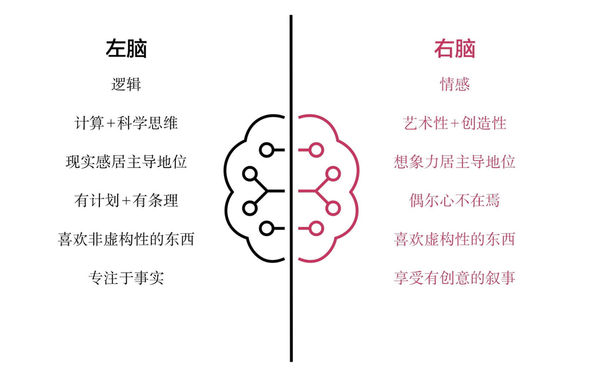

本文是对《原则》一书的第二部分，第 4 章节的概括。
作者认为，由于不同人的大脑构造不同，所以每个人的行为方式（原文中使用的是体验现实的方式）也千差万别。
开头处作者讲了一个真实案例，他交给同事鲍勃一项宏大的任务，鲍勃可以任意挑选自己的团队成员，但在事情进行一段时间后他们发现在具体落实方面毫无进展，经过长时间的讨论和研究，发现问题在于鲍勃挑选的每个角色跟他自己的长处、短板相似。
作者就此对人们不同的思维方式产生了浓厚的兴趣，开始探寻不同思维方式所带来的不同的力量。
我们很多的心理差异实际上是生理差异，大脑就像高矮胖瘦一样存在着的差异，从而影响到我们的心理能力。
天性
我们都有过这样的情况：对其他人做出的决策感到愤怒或者沮丧，但在了解每个人的大脑在生理上就存在不同后，就会逐渐明白他们并不是有意识地采取在我们看来低效的做法，他们只不过是依据自己认为正确的做法来做事，而这种做事方式又是由他们大脑的运行方式决定的，人与人之间出现的分歧不是因为沟通不良导致的，而是因为我们不同的思维方式导致了沟通的不良。
每个人的天性各不相同，这些天性即可能帮助我们又可能伤害我们，取决于我们如何运用我们的天性。这也是我们为什么经常说，具有创造力的天才和疯子往往只有一步之遥的原因。很多杰出的有创造力的人都曾患有双相障碍，如贝多芬、海明威、柴可夫斯基、丘吉尔。
合作
科学研究发现，人脑的构造先天地使人需要并享受社会合作。所以做有意义的工作和进行有意义的社交活动，不仅会让我们的生活更美好，更是我们天生就需要的生理需求。从社会合作中获得有意义的人际关系使我们更快乐、更健康、更有创造力，同时也会让我们的大脑发育得更好。我们的祖先进化出了支持合作功能的大脑，并以此支持狩猎等需要合作的活动，随着群体变得比个体更强大，大脑不断进化出管理更大群体的能力，这一进化使得利他意识、伦理观、良知和尊严意识发展起来。
斗争
我们的头脑中永远会存在两股势力间，分别是情绪和理性思考。
情绪主要是由潜意识性的杏仁核控制的，而理性思考主要是由意识性的前额皮层控制的。
杏仁核是一个小小的杏仁状构造，深深地隐藏在大脑底部，是大脑最强有力的区域之一。尽管你感觉不到它，但它控制着你的行为。作者把人们被情绪控制时的状态称为「杏仁核绑架」。如果你放任自己做出本能反应的话，你就很可能会反应过度，你也可以安慰自己，因为你已经知道，你经历的任何精神痛苦不久后都会自动消失。
大部分情况下，「杏仁核绑架」来得快去得也快，杏仁核产生的反应是一阵爆发然后平息，而前额皮层产生的反应更为稳定和持久。
我们所面临最大的挑战是让深思熟虑的较高层次的自我管理情绪性的较低层次的自我，做到这一点的最佳途径是有意识地养成习惯。习惯是大脑中最强有力的工具。习惯本质上是一种惯性，一种继续把你一直做的事情做下去（或者继续不做你一直不做的事情）的强烈倾向。研究显示，如果你能坚持某种行为约 18 个月，你就会形成一种几乎要永远做下去的强烈倾向。
潜意识
在我们的大脑中有两种潜意识，一种就是我们上边提到的情绪性的潜意识，它们具有危险的动物性，但我们还有一部分潜意识比意识更聪明、反应更快。
人们所说的灵感就是来自这部分潜意识，你会发现大部分情况下我们是在放松、不试图刻意去思考的时候会产生创造性突破。这也解释了为什么我们经常在淋浴的时候产生创意。
很多人认为只要往我们大脑中（也就是意识里）不断地塞入东西才能让我们进步，这样做可能会适得其反，有时候清理我们的头脑可能是取得进展的最佳途径。
左右脑
我们听说过一种说法，有的人是左脑思维者，有的人是右脑思维者。
简单来说左右脑的分工如下：
- 左脑按顺序推理，分析细节，并擅长线性分析。
- 右脑思考不同类别，识别主题，综合大局。
通常左脑思维者人们称为「明智」的人，右脑思维者被称为「机灵」的人。

如果我们了解到自己和其他人的思维倾向，认识到这两种思维方式都各有所长，并按照思维方式的不同来对每个人分配他更加擅长的工作，可以产生很好的结果。
大自然塑造万物皆是有目的的，每个人都有自己的长处和短处，每个人都在他们的生活中扮演着重要的角色。我们所需要的并不是战胜其他人的勇气，而是坚持做最真实自我的勇气，不必太过在意其他人对你的冀望。
各司其职
在我们生活和工作中会遇到各式各样性格的人，有的人内向，有的人外向；有的人喜欢井然有序的生活方式，另一些喜欢灵活随性的方式；一些人理性分析客观事实，考虑所有与具体情况相关的已知、可证明因素，富有逻辑性地决定如何行动，而另一些偏好感觉者关注人与人之间的和谐；一些人可以看到全局，另一些人看到的是细节；一些人关注日常任务，另一些人关注目标及其实现途径。
可以把团队中的成员识别为5种类型，创造者、推进者、改进者、贯彻者和变通者。
- 创造者提出新想法、新概念。他们喜欢非结构化、抽象的活动，喜欢创新和不走寻常路。
- 推进者传递这些新想法并推进。他们喜欢处理人与人之间的关系。他们非常善于激发工作热情。
- 改进者挑战想法。他们分析计划以寻找缺陷，然后以很客观、符合逻辑的方式改进计划。他们喜欢事实和理论，以系统性的方式工作。
- 贯彻者也可以叫作执行者。他们确保重要的工作得到执行，目标被实现。他们关注细节和结果。
- 变通者是以上4种类型的结合。他们能根据特定需求调整自身，并能从各种各样的视角看待问题。
作者认为在我们的生命历程中，了解人的特性是必要的一步。我们做什么并不重要，只要做的事符合自己的个性和人生理想就够了。经济水平在基本生活线之上人，幸福水平和大众所认为的成功标准之间是没有任何联系的。
回到刚开始作者遇到的问题，无论在生活还是工作中，我们和其他人合作的最好方式都是把具有互补性特征的人搭配在一起，这样才能创建最适于完成任务的团队组合。把不同的人组织起来，更好地发挥其长处，弥补其短板，就像指挥交响乐团一样，做得好就很漂亮，做不好就很糟糕。
最后作者举了一个团队管理的例子，我觉得很恰当，摘抄下来：
在管理其他人方面，我能想到的比方是一个好乐队。乐队指挥是塑造者、引导者，他主要不是“做”（例如他不演奏乐器，尽管他了解很多关于乐器的知识），而是勾勒结果，并确保乐队所有成员一起发力实现目标。指挥要确保每个乐队成员知道自己的长处和短处，以及各自的职责。不是每个人都自己演奏得最好，而是通过合作实现“1+1 ＞ 2”的效果。指挥最吃力不讨好的工作之一是开除总是不能好好演奏或合作的人。最重要的是，指挥要确保演奏效果和他想的一样。他说：“音乐得是这样。”然后加以落实：“贝斯手，撑起整个格局。这里要连接得妙，这里要奏出神韵。”乐队的每个部分也有各自的领导者，如首席小提琴手等，他们也帮助把作曲者和指挥的设想表达出来。